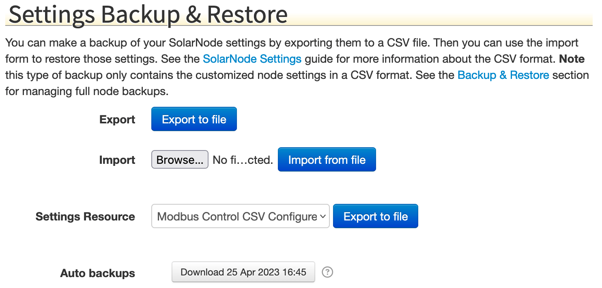
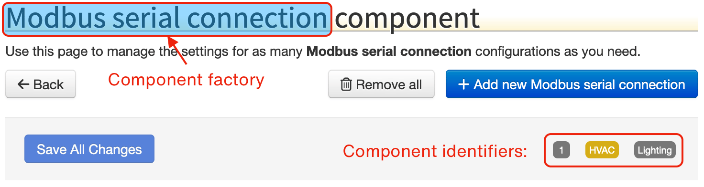

27. Settings Files¶
SolarNode plugins support configurable properties, called settings. The SolarNode setup app allows you to manage settings through simple web forms.
Settings can also be exported and imported in a CSV format, and can be applied when SolarNode starts up with Auto Settings CSV files. Here is an example of a settings form in the SolarNode setup app:

There are 3 settings represented in that screen shot:
- Schedule
- Destination
- Temporary Destination
Tip
Nearly every form field you can edit in the SolarNode setup app represents a setting for a component in SolarNode.
In the SolarNode setup app the settings can be imported and exported from the main Settings screen in the Settings Backup & Restore section:

27.1 Settings CSV example¶
Here's an example snippet of a settings CSV file:
net.solarnetwork.node.io.modbus.1,serialParams.baudRate,19200,0,2014-03-01 21:01:31
net.solarnetwork.node.io.modbus.1,serialParams.parityString,even,0,2014-03-01 21:01:31
net.solarnetwork.node.io.modbus.1,serialParams.portName,/dev/cuaU0,0,2014-03-01 21:01:31
net.solarnetwork.node.io.modbus.FACTORY,1,1,0,2014-03-01 21:00:31
These settings all belong to a net.solarnetwork.node.io.modbus component. The meaning
of the CSV columns is discussed in the following section.
27.2 Settings CSV syntax¶
Settings files are CSV (comma separated values) files, easily exported from spreadsheet applications like Microsoft Excel or Google Sheets. The CSV must include a header row, which is skipped. All other rows will be processed as settings.
The Settings CSV format uses a quite general format and contains the following columns:
| # | Name | Description |
|---|---|---|
| 1 | key | A unique identifier for the service the setting applies to. |
| 2 | type | A unique identifier for the setting with the service specified by key, typically using standard property syntax. |
| 3 | value | The setting value. |
| 4 | flags | An integer bitmask of flags associated with the setting. See the flags section for more info. |
| 5 | modified | The date the setting was last modified, in yyyy-MM-dd HH:mm:ss format. |
To understand the key and type values required for a given component requires consulting the
documentation of the plugin that provides that component. You can get a pretty good picture of what
the values are by exporting the settings after configuring a component in SolarNode. Typically the
key value will mirror a plugin's Java package name, and type follows a JavaScript-like property
accessor syntax representing a configurable property on the component.
27.2.1 Setting property syntax¶
The type setting value usually defines a component property using a JavaScript-like syntax with
these rules:
| Expression | Example | Description |
|---|---|---|
| Property | name |
a property named name |
| Nested property | name.subname |
a nested property subname on a parent property name |
| List property | name[0] |
the first element of an indexed list property named name |
| Map property | name['key'] |
the key element of the map property name |
These rules can be combined into complex expressions, for example propIncludes[0].name or
delegate.connectionFactory.propertyFilters['UID'].
27.2.2 Setting flags¶
Each setting has a set of flags that can be associated with it. The following table outlines the bit offset for each flag along with a description:
| # | Name | Description |
|---|---|---|
| 0 | Ignore modification date | If this flag is set then changes to the associated setting will not trigger a new auto backup. |
| 1 | Volatile | If this flag is set then changes to the associated setting will not trigger an internal "setting changed" event to be broadcast. |
Note these are bit offsets, so the decimal value to ignore modification date is 1, to mark
as volatile is 2, and for both is 3.
27.2.3 Component factories¶
Many plugins provide component factories which allow you to configure any number of instances of that component. Each component instance is assigned a unique identifier when it is created. In the SolarNode setup app, the component instance identifiers appear throughout the UI:

In the previous example CSV the Modbus I/O plugin allows you to
configure any number of Modbus connection components, each with their own specific settings. That is
an example of a component factory. The settings CSV will include a special row to indicate that such
a factory component should be activated, using a unique identifier, and then all the settings
associated with that factory instance will have that unique identifier appended to its key
values.
Going back to that example CSV, this is the row that activates a Modbus I/O component instance with
an identifier of 1:
net.solarnetwork.node.io.modbus.FACTORY,1,1,0,2014-03-01 21:00:31
The synax for key column is simply the service identifier followed by .FACTORY. Then the type
and value columns are both set the same unique identifier. In this example that identifier is 1.
For all settings specific to a factory component, the key column will be the service identifier
followed by .IDENTIFIER where IDENTIFIER is the unique instance identifier.
Here is an example that shows two factory instances configured: Lighting and HVAC. Each have a
different serialParams.portName setting value configured:
net.solarnetwork.node.io.modbus.Lighting,serialParams.portName,/dev/cuaU0,0,2014-03-01 21:01:31
net.solarnetwork.node.io.modbus.HVAC,serialParams.portName,/dev/ttyUSB0,0,2014-03-01 21:01:31
net.solarnetwork.node.io.modbus.FACTORY,Lighting,Lighting,0,2014-03-01 21:00:31
net.solarnetwork.node.io.modbus.FACTORY,HVAC,HVAC,0,2014-03-01 21:00:31
27.3 Auto settings¶
SolarNode settings can also be configured through Auto Settings, applied when SolarNode starts up,
by placing Settings CSV files in the /etc/solarnode/auto-settings.d directory. These settings are
applied only if they don't already exist or the modified date in the settings file is newer than the
date they were previously applied.